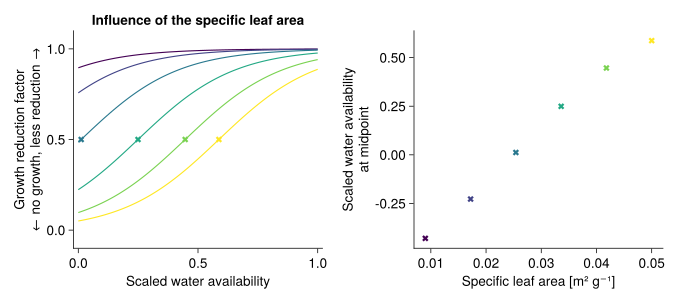
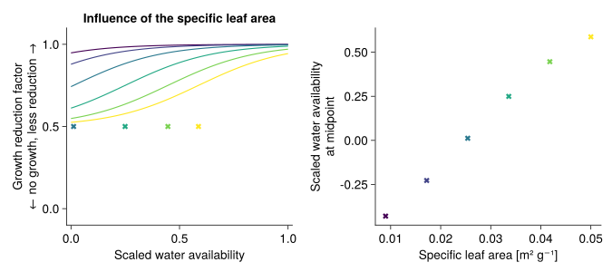
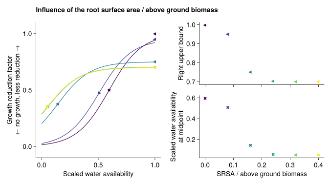
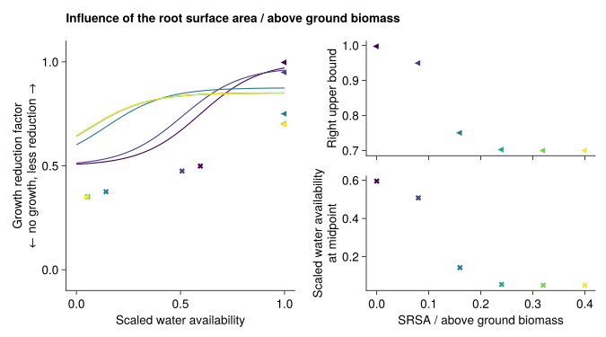
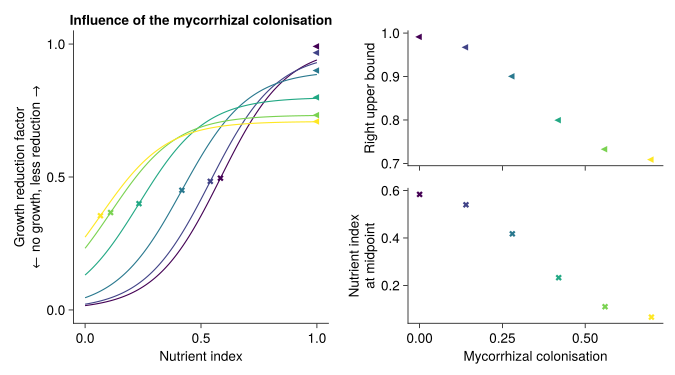
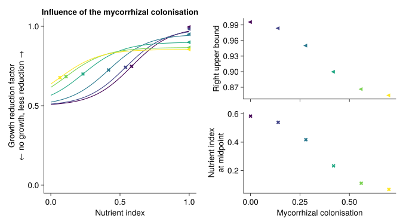
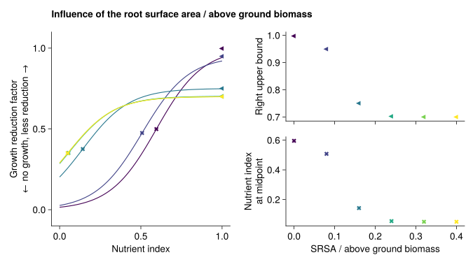
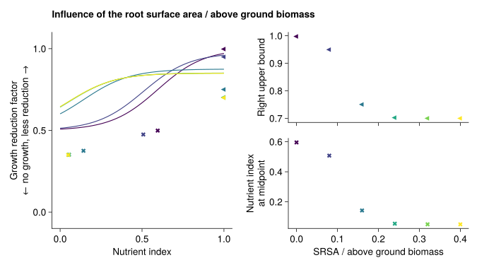

Functional response
The growth of the plants is limited by soil water and nutrients
Water stress
The species differ in the response to water stress by the different specific leaf areas and root surface areas per above ground biomass. The values of both response curves are multiplied to get the growth reduction factor.
It is implemented in Growth.water_reduction!.
Specific leaf area
- the core of the functional response is build in
FunctionalResponse.sla_water_response - the strength of the reduction is modified by the parameter
max_SLA_water_reductioninGrowth.sla_water_reduction!
max_SLA_water_reduction equals 1: 
max_SLA_water_reduction equals 0.5: 
RegionalGrasslandSim.FunctionalResponse.sla_water_response — Functionsla_water_response(;
SLA,
mid_SLA = 0.025u"m^2 / g",
slope_func_parameter = 75u"g / m^2",
min_SLA_half_response = -0.8,
max_SLA_half_response = 0.8,
maximal_reduction)RegionalGrasslandSim.Growth.sla_water_reduction! — Functionsla_water_reduction!(; calc, fun_response)Reduction of growth due to stronger water stress for higher specific leaf area (SLA).
Root surface area / aboveground biomass
- the core of the functional response is build in
FunctionalResponse.srsa_response - the strength of the reduction is modified by the parameter
max_SRSA_water_reductioninGrowth.srsa_water_reduction!
max_SRSA_water_reduction equals 1: 
max_SRSA_water_reduction equals 0.5: 
RegionalGrasslandSim.FunctionalResponse.srsa_response — Functionsrsa_response(;
SRSA_above,
mid_SRSA_above = 0.12u"m^2 / g",
slope_func_parameters = 40u"g / m^2 ",
min_right_upper_bound = 0.7,
max_right_upper_bound = 1,
min_SRSA_half_response = 0.05,
max_SRSA_half_response = 0.6,
maximal_reduction)RegionalGrasslandSim.Growth.srsa_water_reduction! — Functionsrsa_water_reduction!(; calc, fun_response)Reduction of growth due to stronger water stress for lower specific root surface area per above ground biomass (SRSA_above).
Nutrient stress
The species differ in the response to nutrient availability by different proportion of mycorrhizal colonisations and root surface per above ground biomass. The maximum of both response curves is used for the nutrient reduction function. It is assumed that the plants needs either many fine roots per above ground biomass or have a strong symbiosis with mycorrhizal fungi.
It is implemented in Growth.nutrient_reduction!.
Arbuscular mycorrhizal colonisation
- the core of the functional response is build in
FunctionalResponse.amc_nut_response - the strength of the reduction is modified by the parameter
max_AMC_nut_reductioninGrowth.amc_nut_reduction!
max_AMC_nut_reduction equals 1: 
max_AMC_nut_reduction equals 0.5: 
RegionalGrasslandSim.FunctionalResponse.amc_nut_response — Functionamc_nut_response(;
mycorrhizal_colon,
max_right_upper_bound = 1,
min_right_upper_bound = 0.7,
max_AMC_half_response = 0.6,
min_AMC_half_response = 0.05,
mid_AMC = 0.35,
slope = 10,
maximal_reduction)Transforms the mycorrhizal colonisation into parameters of the response curve of growth in relation to nutrient availability.
RegionalGrasslandSim.Growth.amc_nut_reduction! — Functionamc_nut_reduction!(; calc, fun_response)Reduction of growth due to stronger nutrient stress for lower arbuscular mycorrhizal colonization (AMC).
Root surface area / aboveground biomass
- the core of the functional response is build in
FunctionalResponse.srsa_response - the strength of the reduction is modified by the parameter
max_SRSA_nut_reductioninGrowth.srsa_nut_reduction!
max_SRSA_nut_reduction equals 1: 
max_SRSA_nut_reduction equals 0.5: 
RegionalGrasslandSim.Growth.srsa_nut_reduction! — Functionsrsa_nut_reduction!(; calc, fun_response)Reduction of growth due to stronger nutrient stress for lower specific root surface area per above ground biomass (SRSA_above).